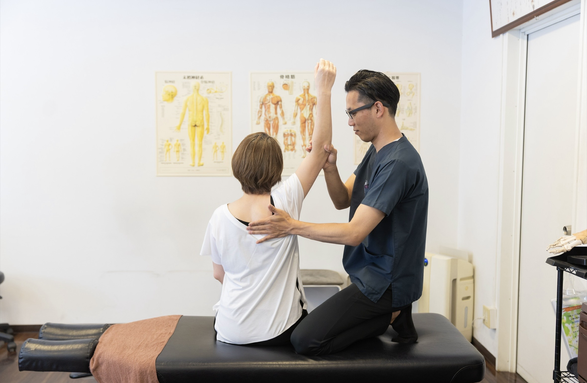
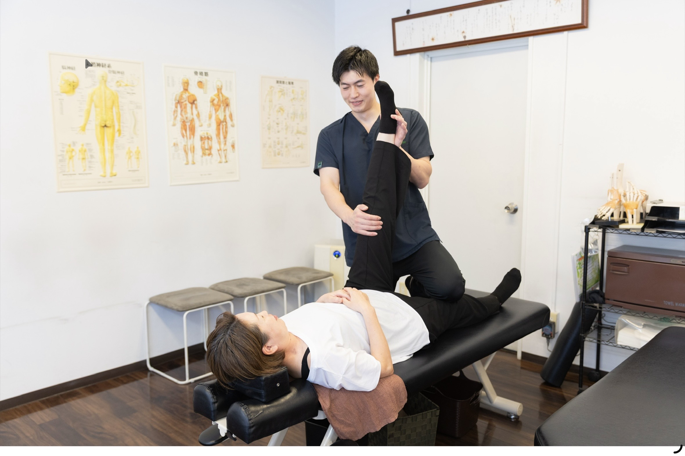
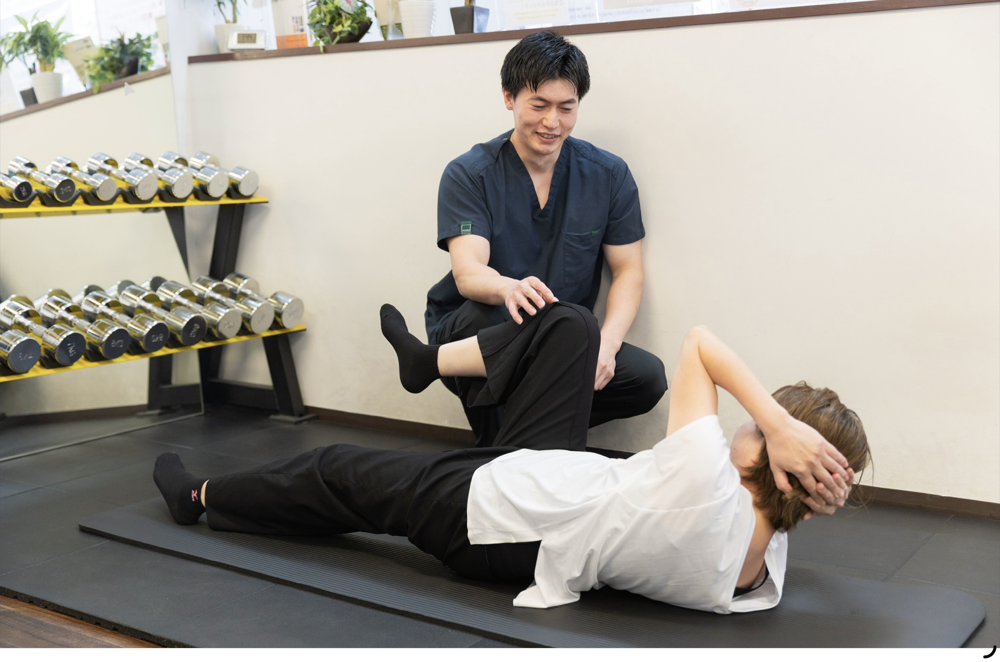

人生100年時代を、痛みのない動ける身体で。
専門家と叶える
「健康推進プロジェクト」
専門家と叶える
「健康推進プロジェクト」
ジムに通っても続かない、運動すると痛む……そんな悩みをお持ちの方へ。
身体を知り尽くした国家資格を持つプロが、あなたの「一生モノの身体づくり」をマンツーマンでサポートします。
運動が続かないあなたへ。
身体のプロが、最後まであなたを導きます。
「ジムに通っても、一人だと続かない……」
これまで多くの方が、運動の継続に挫折を経験されています。それは決してあなたの意志が弱いからではありません。
正しい方法やペースを知らなければ、誰でも自分一人で身体を変え続けるのは非常に難しいことなのです。
「もう、一人で悩む必要はありません。
専門家があなたの身体の伴走者になります。」
自分自身で管理するのは大変ですが、身体の状態を熟知した当院の先生に、その管理をお任せいただけませんか？
痛みや不調の状態を理解したプロフェッショナルが、あなたに最適な運動プランを作成し、モチベーションを維持しながら、最短距離で目標達成まで二人三脚でサポートいたします。
一人で頑張りすぎて、
身体を壊してしまっては本末転倒です。
未来の自分に問題を持ち越さず、今、私たちと共に
「痛みのない一生モノの身体」を目指して、一歩踏み出しましょう。
整骨院だからできる
3つのアプローチ

医学的視点に基づいた、
安全な身体分析
「痛みの原因」と「動かしていい筋肉・避けるべき動き」を治療家が深く把握しているため、怪我のリスクを最小限に抑えた指導が可能です。一般的なジムでは気づけない身体の癖を見抜きます。

治療家による
パーソナルケア
ただ鍛えるだけではありません。トレーニングの前後には、必要に応じて専門的なストレッチやコンディショニングを行い、筋肉の柔軟性を高めながら効率的に、かつ美しく体を変えていきます。

なまけ心に勝つ、
プロの伴走者
モチベーション管理だけでなく、日々の身体の変化（痛みの有無、疲労感など）を医学的な視点で管理しながら、あなたにとって「一番無理のない、でも確実に変わるペース」を一緒に作り上げます。
このようなご希望をお持ちの方に
最適なプログラムです
膝や腰の負担を減らす、健康的な減量
ただ痩せるのではなく、関節への負担を減らし、痛みを予防するための「健康寿命を延ばす」減量を目指します。
痛みを気にせず、趣味やスポーツを長く楽しみたい
ゴルフ、登山、旅行など。「痛いから」と諦めかけていた趣味を、生涯現役で楽しむための身体機能を取り戻します。
正しい姿勢づくり
医療従事者の目線で猫背や巻き肩を改善。姿勢を支える筋肉を育てることで、痛みの出にくい美しい身体を作ります。
運動不足・体力低下の解消
階段での息切れや、抜けない疲労感に。無理のないペースで基礎体力を底上げし、日常生活をラクにします。
根本改善のための
ステップアップ・プログラム
あなたの目標と現在の身体の状態に合わせて、最適な期間をお選びいただけます。すべてのプランで、国家資格者による週1回のプログラムチェックとマンツーマン指導を実施します。
まずはここから：
お身体の状態確認プラン（4回）
運動習慣をつける第一歩。プロの目線で現在の身体の癖や痛みのリスクを分析し、「あなた専用の正しい動かし方」を見つけるための初期プログラムです。
（税込）
運動習慣定着プラン（12回）
健康的な減量（3〜5kg目安）や、痛みの出にくい身体づくりを本格的に進める方に。定期的な運動を通じて、身体の機能が正しく働き始めるのを確信できる中心的なコースです。
（税込）
人生が変わる身体改革プラン（24回）
より大きな減量目標（6〜8kg目安）や、将来の生活習慣病予防を見据えた長期プログラム。「太りにくく、痛みを繰り返さない一生モノの動ける身体」を完全に定着させます。
（税込）
よくあるご質問
Q.
運動経験が全くなくても大丈夫ですか？
Q.
腰痛（または膝の痛み）持ちですがトレーニングできますか？
Q.
どんな服装で行けばいいですか？シューズは必要ですか？
＼ 一生モノの身体づくり、始めませんか？ ／
【公式LINEからのお問い合わせ・体験ご予約】
「私のような運動音痴でも大丈夫？」
「過去に〇〇を痛めたことがあるけどできる？」
といったご不安な点も、LINEからお気軽にご相談ください。
身体のプロフェッショナルが直接お答えいたします。
＼スムーズなご案内のため、予約優先制となります／
未来の自分に問題を持ち越さず、
今、一歩踏み出しましょう。

MESSAGE
西院整骨院 院長
年齢を重ねるにつれて、何もしなければ筋肉は落ち、関節の動きは硬くなっていきます。「運動したほうがいい」と分かっていても、医学的知識のないまま一人で正しい努力を続けるのは非常に難しいものです。
西院整骨院の「健康推進プロジェクト」では、あなたにとって丁度いい、医学的に正しいトレーニングを私たちが完全サポートします。過去の怪我への不安や、周りの目を気にする必要はありません。
治療家と一緒に自分の身体と向き合い、
「痛みのない一生モノの身体」を目指して
私たちと共に歩んでいきましょう。
医院情報・アクセス
西院整骨院
〒615-0022 京都府京都市右京区西院平町25
阪急・嵐電「西院駅」より南へ徒歩4分
【診療時間】 ※予約優先制
平日：9:00〜12:00 / 15:00〜19:30
土曜：9:00〜13:00
※休診日：土曜午後・日曜・祝日